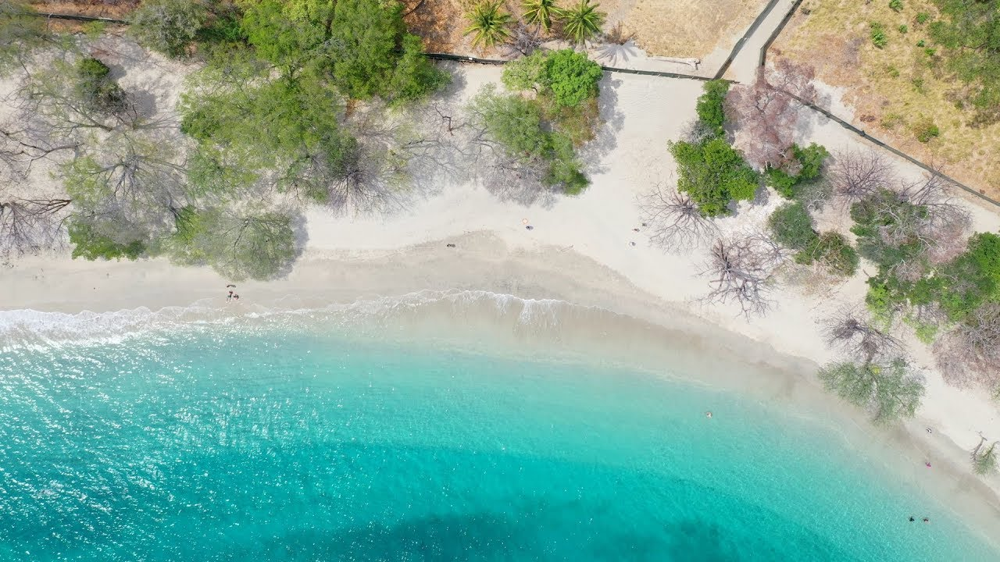
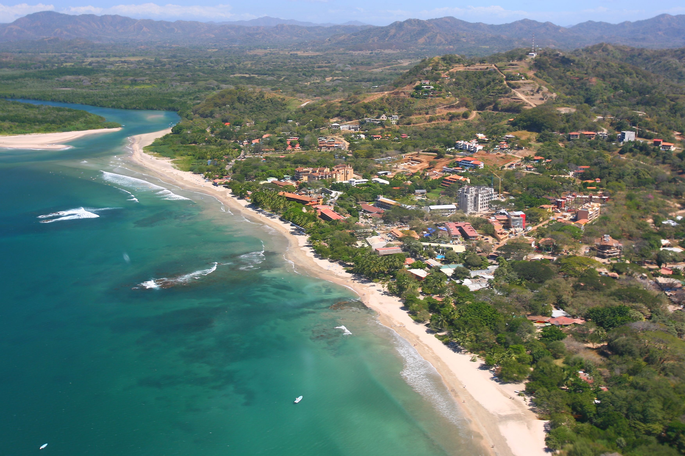

Playa Penca
Playa Penca está ubicada en Carrillo, Guanacaste, es pequeña tiene una longitud aproximada de 300 m, posee arena blanca, aguas cristalinas y poco oleaje. Está rodeada de playas hermosas para visitar en un solo día y disfrutar en familia y amigos.
Tamarindo
Tamarindo es una ciudad de la provincia de Guanacaste, en Santa Cruz. Es conocida por sus playas con oleaje fuerte, como Tamarindo y Langosta, perfectas para practicar surf. Está rodeado de hoteles y turismo, cerca de Parques Nacionales para visitar.
